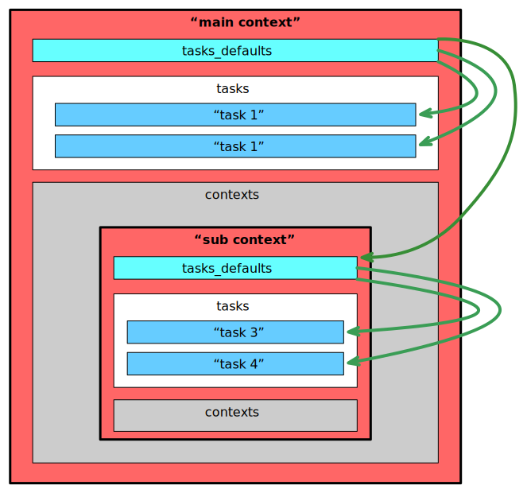

Hierarchy and Inheritance
A context can include itself other contexts by the contexts key. Each of them allows the same properties as its parent context. The properties task_defaults and script_defaults pass on their values through the context hierarchy where items deeper in the hierarchy override values defined earlier if keys overlap. The precises mechanism is described on the composing data page.
We explore the inheritance mechanism by the following example on this page.
This results in the following values for the tasks.
| Task name | priority | max_trials |
|---|---|---|
| task 1 | 1 | 2 |
| task 2 | 2 | 2 |
| task 3 | 3 | 2 |
| task 4 | 4 | 4 |
